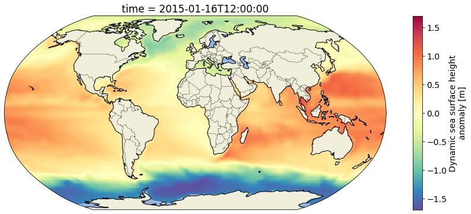

Contributed by PO.DAAC.
View at PO.DAAC’s github page.
Getting Started
In this notebook, we will access monthly sea surface height from ECCO V4r4 (10.5067/ECG5D-SSH44). The data are provided as a time series of monthly netCDFs on a 0.5-degree latitude/longitude grid.
We will access the data from inside the AWS cloud (us-west-2 region, specifically) and load a time series made of multiple netCDF datasets into a single xarray dataset. This approach leverages S3 native protocols for efficient access to the data.
Requirements
AWS
This notebook should be running in an EC2 instance in AWS region us-west-2, as previously mentioned. We recommend using an EC2 with at least 8GB of memory available.
The notebook was developed and tested using a t2.large instance (2 cpus; 8GB memory).
Python 3
Most of these imports are from the Python standard library. However, you will need to install these packages into your Python 3 environment if you have not already done so:
s3fs
requests
pandas
xarray
matplotlib
cartopy
import s3fsimport requestsimport numpy as npimport xarray as xrimport matplotlib.pyplot as pltimport matplotlib.animation as animationimport cartopyimport cartopy.crs as ccrsimport cartopy.feature as cfeatfrom json import dumpsfrom io import StringIOfrom os.path import dirname, joinfrom IPython.display import HTMLplt.rcParams.update({'font.size': 14})
Make a folder to write some outputs, if needed:
!mkdir -p outputs/
Inputs
Configure one input: the ShortName of the desired dataset from ECCO V4r4. In this case it’s the following string that unique identifies the collection of monthly, 0.5-degree sea surface height data.
Get a list of netCDF files located at the S3 path corresponding to the ECCO V4r4 monthly sea surface height dataset on the 0.5-degree latitude/longitude grid.
Open with the netCDF files using the s3fs package, then load them all at once into a concatenated xarray dataset.
ssh_Dataset = xr.open_mfdataset( paths=[fs.open(f) for f in ssh_Files], combine='by_coords', mask_and_scale=True, decode_cf=True, chunks={'latitude': 60, # These were chosen arbitrarily. You must specify 'longitude': 120, # chunking that is suitable to the data and target'time': 100} # analysis.)ssh = ssh_Dataset.SSHprint(ssh)
<matplotlib.collections.QuadMesh at 0x7fae2533d730>

Now plot the whole time series (post-2010) in an animation and write it to an mp4 file called ecco_monthly_ssh_grid_2015_to_x.mp4:
def get_animation(var, cmap: str="Spectral_r"):"""Get time series animation for input xarray dataset"""def draw_map(i: int, add_colorbar: bool): data = var[i] m = data.plot(ax=ax, transform=ccrs.PlateCarree(), add_colorbar=add_colorbar, vmin=var.valid_min, vmax=var.valid_max, cmap=cmap) plt.title(str(data.time.values)[:7])return mdef init():return draw_map(0, add_colorbar=True)def animate(i):return draw_map(i, add_colorbar=False)return init, animate
Now make the animation using the function:
fig, ax = make_figure(proj=ccrs.Robinson())init, animate = get_animation(ssh_after_201x)ani = animation.FuncAnimation(fig=fig, func=animate, frames=ssh_after_201x.time.size, init_func=init, interval=0.2, blit=False, repeat=False)# Now save the animation to an MP4 file:ani.save('outputs/ecco_monthly_ssh_grid_2015_to_x.mp4', writer=animation.FFMpegWriter(fps=8))plt.close(fig)
Render the animation in the ipynb:
#HTML(ani.to_html5_video())
tflux (0.5-degree gridded, daily)
Now we will do something similar to access daily, gridded (0.5-degree) ocean and sea-ice surface heat fluxes (10.5067/ECG5D-HEA44). Read more about the dataset and the rest of the ECCO V4r4 product suite on the PO.DAAC Web Portal.
Use a “glob” pattern when listing the S3 bucket contents such that only netCDFs from January 2015 are represented in the resulting list of paths.
Now open them all as one xarray dataset just like before. Open and pass the 365 netCDF files to the xarray.open_mfdataset constructor so that we can operate on them as a single aggregated dataset.
tflux_Dataset = xr.open_mfdataset( paths=[fs.open(f) for f in tflux_Files], combine='by_coords', mask_and_scale=True, decode_cf=True, chunks={'latitude': 60, # These were chosen arbitrarily. You must specify 'longitude': 120, # chunking that is suitable to the data and target'time': 100} # analysis.)tflux = tflux_Dataset.TFLUXprint(tflux)
<xarray.DataArray 'TFLUX' (time: 31, latitude: 360, longitude: 720)>
dask.array<concatenate, shape=(31, 360, 720), dtype=float32, chunksize=(1, 60, 120), chunktype=numpy.ndarray>
Coordinates:
* time (time) datetime64[ns] 2015-01-01T12:00:00 ... 2015-01-31T12:00:00
* latitude (latitude) float32 -89.75 -89.25 -88.75 ... 88.75 89.25 89.75
* longitude (longitude) float32 -179.8 -179.2 -178.8 ... 178.8 179.2 179.8
Attributes:
coverage_content_type: modelResult
direction: >0 increases potential temperature (THETA)
long_name: Rate of change of ocean heat content per m2 accou...
units: W m-2
comment: The rate of change of ocean heat content due to h...
valid_min: [-1713.51220703]
valid_max: [870.31304932]
Select a region over the Gulf of Mexico and spatially subset it from the larger dataset by slicing on the latitude and longitude axes.